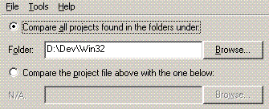
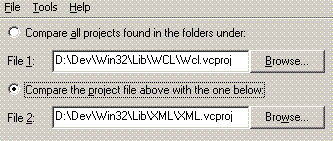
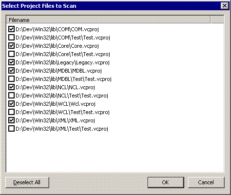
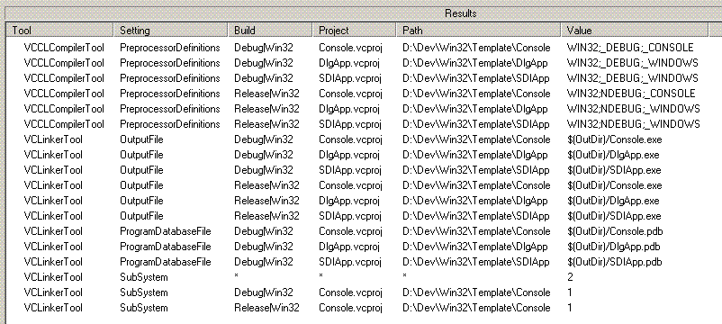
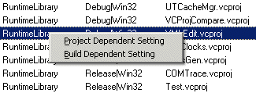
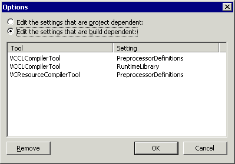

This utility allows you to compare the project settings of your Visual C++ projects so that you can easily find inconsistencies. These differences could be as simple as forgetting to "Suppress Startup Banner" when compiling to potentially more serious settings such as the "Buffer Security Check".
The program supports Visual C++ 7.0 upwards, i.e. any version that uses the XML format project files.
You can select the project files to compare in two ways. The first is to select a folder and the program will search for all project files (*.vcproj) in that and any subfolders. You will be shown a list of the files found first so that you can refine it before continuing. The alternative is to just pick two specific files and compare those. You use the radio buttons at the top of the main view to switch between these two mechanisms.
 
Once you have chosen your folder or files you can either use "File | List All Settings" to just see all the project settings that are contained within the project files, or you can use "File | Compare Settings" to perform a comparison. At this point, if you chose to find all files in a folder you will be presented with a list of the files found and you can choose to exclude some.

Then the project files will be parsed and the results displayed in the lower grid. The results table is sorted according to the order of the main columns, i.e. Tool, Setting and then Build Configuration.

If you chose to run a comparison, then you will see only those settings that are different from what the 'common' setting is. The common setting is deemed the one the occurs mostly frequently. If all projects have the same setting it wont be displayed at all. To show what the 'common' setting is a special row appears with an '*' for the filename and path.
The first time you run a comparison you will likely see that a number of settings can't be compared directly because they vary wildy, e.g. AdditionalIncludeDirectotories. The other common issue is settings that differ between build configurations, e.g. RuntimeLibray. If you right-click on the results view you will see a context menu,

The first option allows you to mark this setting as project dependent, which has the effect of hiding it altogether. The second ensures that the comparison is done on a per build configuration basis, e.g. separately for Debug and Release. If the context menu is grayed out it means that one or other setting is already in effect. If you make a mistake you can edit the list of dependent settings through the "Tools | Options..." dialog.

This dialog only allows you to remove settings.
Once you have worked through the differences, either by fixing the project files or by marking the setting as project or build dependent you can refresh the list of settings, or comparison results, by using "File | Refresh" or pressing F5.
This application is freeware - you get what you pay for, nothing more, nothing less.
The full source code (C++) is available from my web site listed below.
The "Help | About" dialog also contains my contact details. Please check the web site for updates.
Email: gort@cix.co.uk
Web: www.cix.co.uk/~gort
Chris Oldwood
10th December 2008